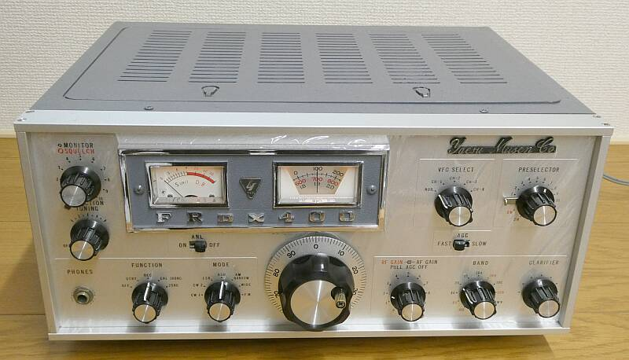
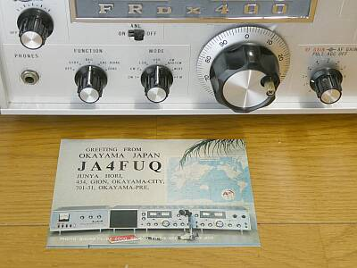
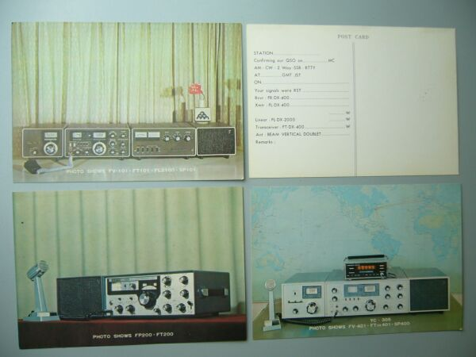
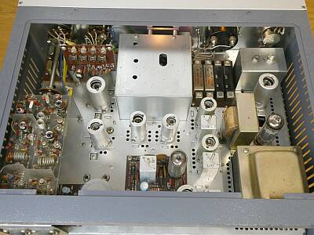
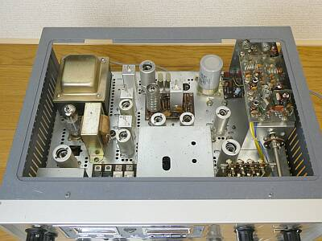
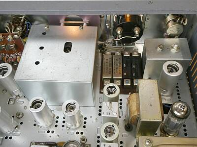

| 私個人が、一番熱を入れてＯＮ－ＡＩＲしていたときにお世話になったマシンで、そこから半世紀経った今、つい手にしてしまいました |
 |
 |
現用当時は、写真のようにYAESUの規格QSLカードを入手して発行していました
この頃は、まだYAESU純正のスタンドマイクはなく、AIWAのDM-47がモデルとして写っています
下段規格ＱＳＬ ＦＴ-２００、ＦＴＤＸ-４０１のものには、純正としてYD-844 スタンドマイクが写っています（もしかしたら、プリモ UD-844かも）
|
|
|

この頃のYAESUには、シリーズ毎に規格QSLカードの用意がありました
ご覧のように裏面は規定印刷されたもので、表面のみ自由に設定できたものです
出てきたものを撮りました ＦＴ－２００ ＦＴ－１０１ ＦＴＤＸ４０１ 各シリーズのものです
裏面は、４００ラインの・・・そう、当時の私のＱＳＬの裏面です
世界中のHAMの方に利用があったと思います(この規格カードを利用したＱＳＬが海外より届いています）
カード転送について、当時は確か２円の海外用転送料金(切手風のもの）を貼ってＪＡＲＬに送っていました |
|
お話を戻して、このＦＲＤＸ４００ですが、確か１９６７年の発売だったと思います
ＡＭを脱した６９年から７２年頃まで、親のすねをかじって一番熱を入れてアマチュア無線を楽しんでいた頃に、お世話になった受信機です
ＦＬＤＸ４００と言う送信機と、トランシーブで使用していました
基本構成は、ＶＦＯはトランジスタ化されたものの、他は全て真空管という内容です
周辺としては、１００／２５ＫＨｚマーカー、５０／１４４ＭＨｚコンバータは、トランジスタ化されていて、特記すべきはコンバータのＴＯＰで、ＦＥＴが採用されています（５０Ｍ／シングルゲート、１４４Ｍ／デュアルゲート）
これらのため、９Ｖの安定化電源が内蔵されています
ＦＬ／ＦＲ１００Ｂという先の経験が活きているのでしょう、ＶＦＯ周りなど、機械的には丈夫な設計です（少なくとも、当時のＴＲＩＯ等と比べると遙かに！）
余談ながら、当時のＦＬＤＸ４００のＶＦＯは旧シリーズ同様の真空管方式・・・安定度はイマニ（イマイチ以下）で、予備的な使い方でしか実用出来ませんでした（トランジスタ化されたＶＦＯの安定度に、感心したものです）
当時使用していたのは、初期のスタンダード（５０ＫＨｚダイヤル、規格ＱＳＬカードに写っている形状ズバリ／オプションだらけのベース・モデル）で、色々つっついて遊ばせてもらい、最後は元の形をとどめることなく処分しました（捨てました！）
新たに入手できたのは、最終モデル（１／６バーニア機構を組み入れたＦＴ－１０１風の１００ＫＨｚダイヤル）のスーパー・デラックス・・・フル・オプションのものです
ＹＡＥＳＵ
この頃が、会社として一番元気が良かった時期かもしれません(会社規模拡大の時期）
ＦＲ１００Ｂ／ＦＬ２００Ｂシリーズの後継である、この４００ラインの発売（トランシーバ型は、ＦＴＤＸ４００）
そして大阪万博の年 １９７０年には、ＦＴ－１０１を発売
この後のアマチュア無線界は、Made in Japan が席巻してしまうことになりました
|
 |
 |
フロントパネル左手前の基板は、FIX-CHユニット
手前左は、6m（左）/2m（右）のコンバーターユニットが並んでいます |
中央奥の基板は、FM検波ユニット
６/2mコンバーターユニット下奥にのぞいているのは、100/25KHzマーカー・ユニット |
保管状態が良かったというか、年期のわりに非常にきれいです
 |
奥に見えるのは、メカニカルフィルタ群です
ＣＷ、ＳＳＢ、ＡＭ、ＦＭと４本用意されています
CW用のナローフィルタについては通過ロスが非常に大きい・・・国際製メカフィルに生じる経年変化、絶縁スポンジの劣化等が考えられます
時間があるときに、取り外して分解･メンテをしなくては・・・です
フィルタ群右のシールドに囲まれた部分は、455KHｚＴノッチ・フィルタ部です |
|
|
|
全体的に保管状態は良いものです
それでも、クリスタルの中に発振しないものがあったり、アクティビティの低下からか発振出力の低下がみられたり、メカニカルフィルタの例のように、部品個体の経年変化による劣化があったり、これはお決まりでしょうがバンドSWやボリュームなど接点の接触不良など物理的な問題、そして調整ずれ（変化）の発生など、規格通りの動作を得るにはそれなりのメンテナンスが必要です
最近の無線機では、考えられないことですが、この頃の製品にあっては、シールドは外ケースが兼用しているようなところがあり、ケースにちゃんと納めないと不要な外部信号を拾ったり、ＲＦ動作が不安定になったりする症状が見受けられます
微妙な感度調整などについては、当然問題になります
|